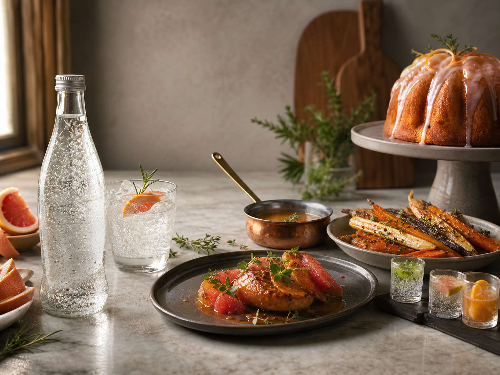

The Test Kitchen Is Unsure
Recipes With Beverly
Will it transform dinner? No. Will we say "bitter citrus gastrique"
while holding a spoon like a microphone? With conviction.
Side Dish / 35 minutes
Beverly-Braised Carrots of Public Courage
Simmer carrots with butter, a splash of Beverly, honey, salt, thyme,
and orange peel until glossy. Announce that the bitterness "adds structure."
- 1 pound carrots
- 1/2 cup Beverly or another bitter citrus soda
- 2 tablespoons butter
- 1 tablespoon honey
Sauce / 12 minutes
Forbidden Pan Sauce
After searing chicken or mushrooms, deglaze with Beverly, add stock,
reduce by half, then whisk in mustard and butter. It tastes mostly like
sauce, which is a triumph.
- 1/3 cup Beverly
- 1/2 cup stock
- 1 teaspoon Dijon mustard
- Cold butter to finish
Dessert / 1 hour
Grapefruit Rind Victory Cake
Replace a little milk in a citrus bundt cake glaze with Beverly. It will
fizz for a second and then become glaze. Everyone must pretend this was
technically advanced.
- 2 cups powdered sugar
- 2 tablespoons Beverly
- 1 tablespoon grapefruit juice
- Pinch of salt
Cocktail-ish / 3 minutes
The Witness Protection Spritz
Pour Beverly over ice with tonic, grapefruit, rosemary, and a very small
amount of optimism. Non-alcoholic unless you make other life choices.
- 2 ounces Beverly
- 3 ounces tonic water
- Grapefruit wedge
- Rosemary sprig
Condiment / 20 minutes
Beverly Reduction For People With Guests
Reduce Beverly with sugar, vinegar, and chili flake until syrupy. Drizzle
over roasted Brussels sprouts. If asked what it is, look toward a window.
- 1 cup Beverly
- 2 tablespoons sugar
- 1 tablespoon vinegar
- Chili flake
Snack / 8 minutes
Institute Popcorn No. 1969
Toss popcorn with melted butter, citrus zest, black pepper, and a mist
of Beverly from a tiny spray bottle. Does this work? It exists.
- 8 cups popcorn
- 3 tablespoons butter
- Grapefruit zest
- One ceremonial spritz